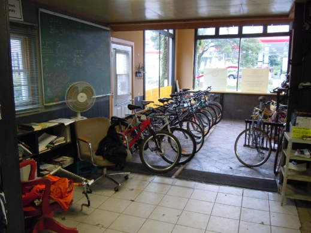
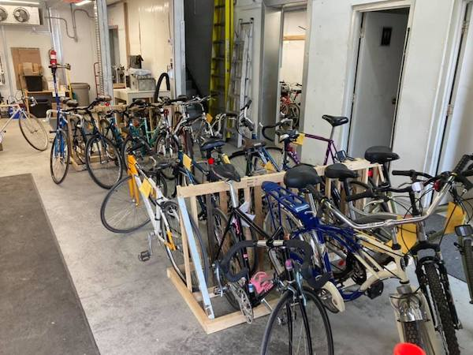
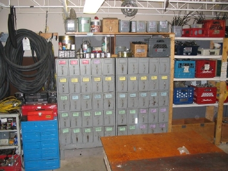

01 OTTAWA'S COMMUNITY BIKE SHOP
Good bikes.
Good people.
Less waste.
We give bicycles and bike parts another life — making cycling more affordable, accessible, and fun for our community.

KEEP
BIKES
ROLLING! ✳
BIKES
ROLLING! ✳
REUSE MORE✳RIDE MORE✳WASTE LESS✳BUILD COMMUNITY✳
THE SHOP
A little bike shop.
A lot of possibilities.
Whether you're looking for an affordable ride, have a bike to donate, or want to learn to fix your own, there's a place for you here.

02Give a bike
Have an unwanted bicycle or spare parts? Help us give them another life.
Donation information ↗ 03
03Fix a bike
Our DIY repair tradition puts tools, knowledge, and confidence in your hands.
Ask about DIY access ↗Prototype note: Current bike sales, parts availability, DIY access, and shop hours must be confirmed before publication.
✳
WHY WE EXIST
We believe a bicycle is worth keeping.
re-Cycles is a not-for-profit community bicycle shop built around a simple idea: useful bikes shouldn't go to waste, and everyone deserves access to affordable cycling.
Be part of it ↗COMMUNITY NEWS
What's happening
at re-Cycles?
Shop announcements, volunteer opportunities and events — all in one place. In a future WordPress site, authorized volunteers could publish these updates without editing HTML.
Special opening hours
Planning a visit? Check the latest shop schedule before heading over.
Shop informationHelp keep bikes rolling
Find out how volunteers contribute to re-Cycles and how to get involved.
VolunteeringAnother life for old bikes
Bike reuse, repairs and community connections are at the heart of the shop.
Our storyPrototype: These are illustrative cards, not current announcements. A future WordPress news feed could replace them automatically.
Instagram link is a placeholder until the organization's account URL is confirmed.
COME SAY HELLO
Find us in
Ottawa.
445 Catherine Street, Unit 1
Ottawa, Ontario
Opening hours and services are being verified for this proposed redesign. Please check the current re-Cycles website before visiting.
Get directions ↗
POWERED BY PEOPLE
Community is
our best tool.
Volunteer your time, share your skills, donate a bike, or simply spread the word.